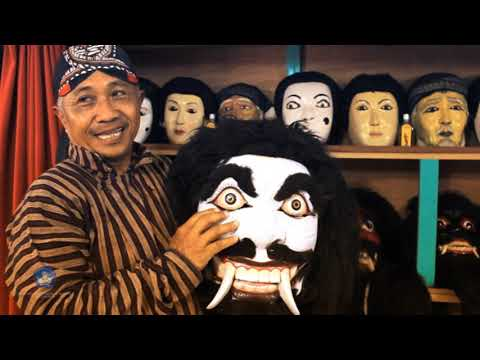

Seni
Kesenian Dongkrek lahir sekitar tahun 1867 di Caruban yang saat ini berganti nama menjadi Kecamatan Mejayan. Dongkrek dipopulerkan oleh Raden Ngabehi Lo Prawirodipuro yang saat itu menjabat sebagai Demang atau Kepala Desa.
Dongrek sendiri diberi nama karena alat musik yang unik alat musik yang dipakai adalah gendang yang menghasilkan suara "Gong" dan alat musik dari kayu yang bergerigi sehingga saat di bunyikan bersuara "Krek".
